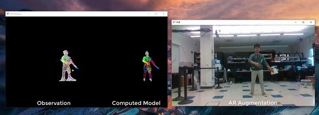
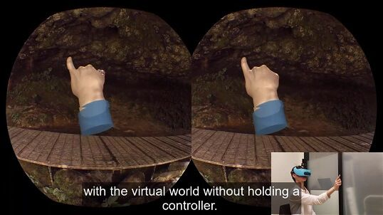

Projects
-
Currently, I am leading the team developing the avatar tracking system for OpenARK (Open Source Augmented Reality Kit) at the FHL Vive center. You may find the latest development version in the smplsynth repository, which may eventually be integrated into OpenARK itself. The system is based on nonlinear programming using the SMPL model and a Random Forest for segmentation. I have also built a number of utilities for working with the SMPL model in C++.

-
I worked on the hand detection module for
OpenARK: Open Augmented Reality Kit which is a simple system using an SVM and convex hull to extract hand keypoints.

-
Quaternion SRUKF is a modern C++ implementation of Square Root Unscented Kalman Filter with support for quaternion vectors.
-
FMM is a C++ implementation of the Fast Marching Method in 2D for image segmentation.
-
watplot is a fast interactive visualization system for SETI: Breakthrough Listen radio telescope data written in C++.
-
I built the Berkeley SETI Open Data Archive, a modern web app for the public to access SETI data.
-
I did some work on deep-learning based anomaly detection on SETI data
-
Bacon2, a Python C++ extension, is a system for running the Hog Contest in CS 61A (the code is now private to prevent students from taking advantage of it). This is the successor to Bacon, which I created previously for the same purpose.
-
Jiggly is a Python web app I built for creating and collaborating on jigsaw-like vocabulary puzzles
-
Hexane is an online scientific calculator I created in high school supporting calculations involving significant figures
-
Cantus is a programming language, interpreter, and IDE I created in high school, written in .NET languages.